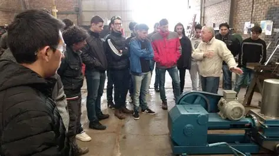
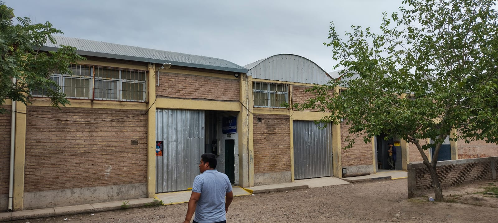
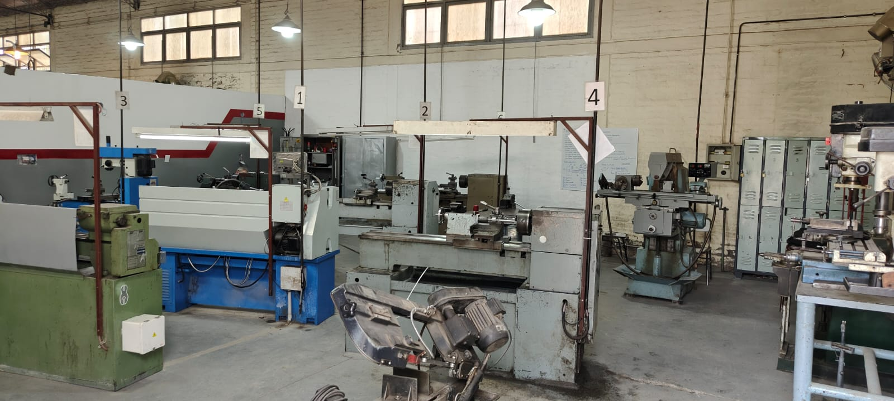
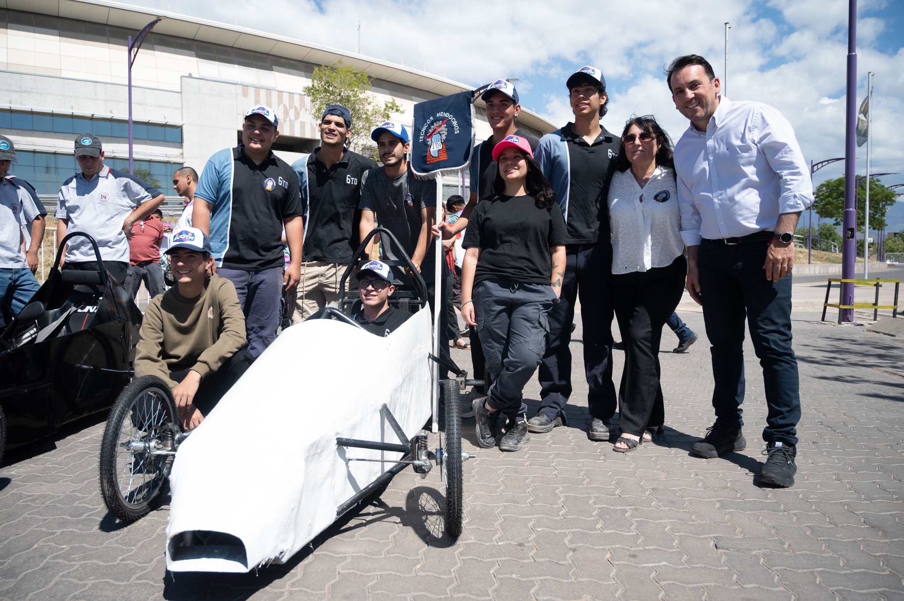
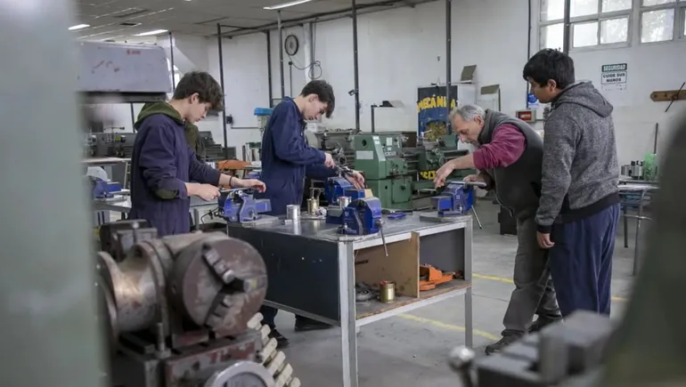

Cuenta con una matricula de 850 estudiantes,
80 en 5 año
La institución mantiene un vínculo activo con la comunidad a través de ferias técnicas, cooperativas y actividades conjuntas
Barrios urbano-marginales
Organización Institucional
Turno mañana y tarde
Plantel docente estable y comprometido
Infraestructura adecuada
Aulas, talleres y espacios administrativos

Espacio Escolar Taller



Proyecto Institucional
"Laboratorio de Aprendizaje"
Integra lo técnico, conceptual y lúdico
Aprender "haciendo"
Trabajo cooperativo y creativo
Curso Observado
5° año, 10ma división – Electromecánica
~19 estudiantes, mayoría varones
Turno mañana
Grupo dinámico y diverso

Foda
Fortalezas
Compromiso del cuerpo docente.
Buena articulación teoría–práctica.
Clima institucional favorable.
Oportunidades
Ampliar el Laboratorio de Aprendizaje a más áreas.
Integrar estrategias lúdicas en más materias técnicas.
Potenciar la relación escuela–comunidad.
Foda
Debilidades
Falta de recursos materiales en algunos talleres。
Desigual compromiso del estudiantado y uso del celular。
Necesidad de fortalecer la convivencia en ciertos grupos。
Amenazas
Condiciones socioeconómicas que afectan la continuidad。
Falta de financiamiento que puede frenar proyectos。
Aumento del desinterés por distracciones digitales。
Conclusiones
La observación permitió comprender de manera integral el funcionamiento institucional y áulico de la escuela.
Se destacó el compromiso docente, la buena predisposición del estudiantado y el valor de la enseñanza práctica en contextos técnicos.
Se identificaron desafíos en la convivencia, el uso del celular y la gestión de conflictos.
Conclusiones
El Laboratorio de Aprendizaje surge como una propuesta valiosa para fortalecer la motivación, la comprensión técnica y el pensamiento crítico.
Se evidenció la necesidad de mejorar la comunicación con las familias, optimizar los recursos de los talleres y sostener espacios de reflexión docente.